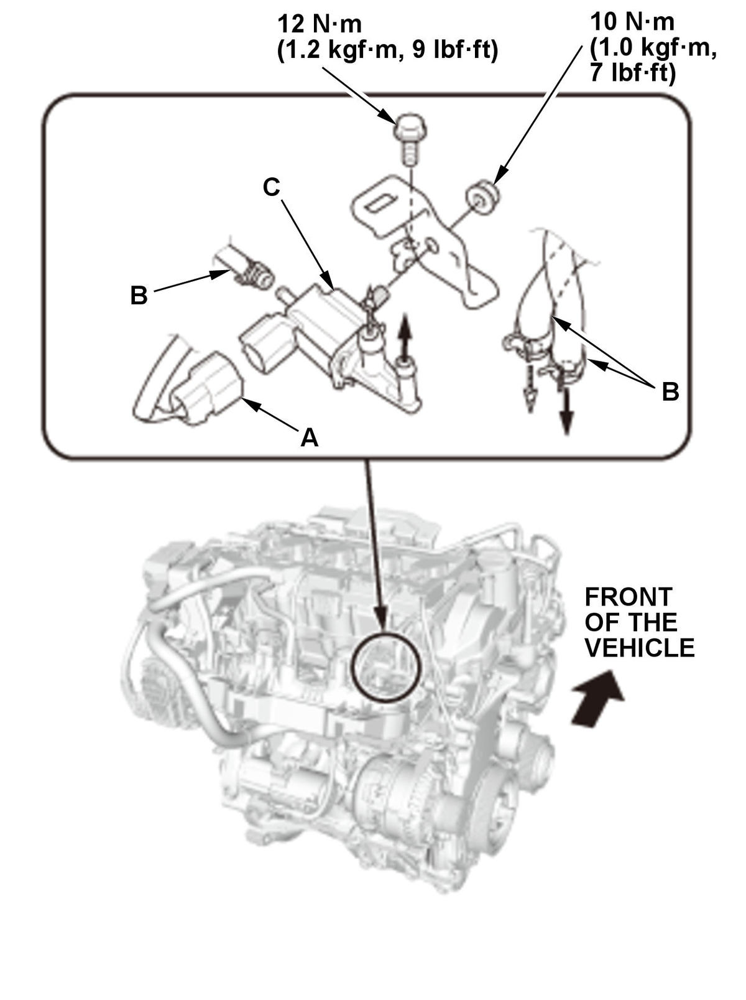

Removal and Installation
- Turbocharger Bypass Control Solenoid Valve - RemoveFig 1: Exploded View Of Turbocharger Bypass Control Solenoid Valve Components With Torque Specifications (L15B7/L15BA)

Courtesy of HONDA, U.S.A., INC.1. Disconnect the connector (A) and the hoses (B). 2. Remove the turbocharger bypass control solenoid valve (C).
- All Removed Parts - Install
1. Install the parts in the reverse order of removal.